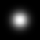
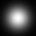
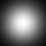
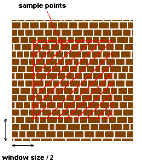
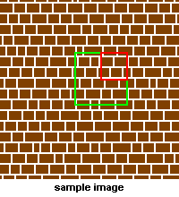
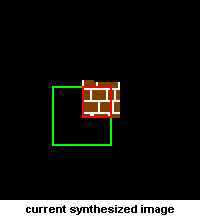
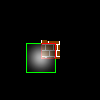

| Object Oriented Programming |
|
|
| Spring Semester 2013 |
|
|
|
Quick Links
Project DescriptionIn this assignment, you will implement a texture synthesis algorithm (read this paper, especially section 2.1) to create new textures from a sample image. We have also summarized the main points below. You will use object oriented technique to implement the program. You are also required to use Qt to develop a simple GUI for your project.Texture synthesis algorithmThe algorithm can be summarized as below: 1. Randomly choose a 3x3 patch in the sample image and place it in the middle of the new image. 2. Find all the boundary points. 3. For each boundary point, 3.1. Calculate the distance to each sample point using normalized sum of squared differences. 3.2. Pick all the samples that have distance less than (1+e)dmin. 3.3. From those samples selected, randomly pick one as the color of the new synthesized pixel. 4. Repeat step 2 until all the pixels are synthesized. Two-dimensional Gaussian kernelYou can let G = exp( -(x2 + y2) / s2 ) where (x, y) is the position and s is the standard deviation. If white represent 1 and black represent 0, the Gaussian kernel will look like the following if you view it as an image. s = 5  s = 10  s = 15  s = 20 Sum of squared differencesTo calculate the distance of two images, all you need to do is to calculate the difference of each corresponding pixel and sum all the differences to get the distance. Let the color of two corresponding pixels be (R1, G1, B1) and (R2, G2, B2). Then the difference is (R1-R2)2 + (G1-G2)2 + (B1-B2)2. To give more weight to the nearby pixels, remember to multiply the corresponding value of the Gaussian kernel at each pixel. Implementation DetailsStep 1Easy. Step 2This step is easy, the boundary points of the current synthesized image are all the pixels that 1. its color is equal to the background color, and 2. there exist one or more pixels in its 8-neighbour that is not a background pixel Step 3.1This step is the core part of the algorithm and you may spend most of your time on it. First, you need to know where does your sample point come from. As stated in the paper, the sample points are simply all the pixels on your original image. To avoid exceeding the image boundary when calculating the distance, you can exclude the pixels within half of the window size near the boundary.  Next, you have to find the distance of all the sample points to your current synthesizing pixel. Here we will talk about the details on how to find the distance of one sample point.   The green square in the above images is your window and its width is equal to the window size. In the sample image, the window is centered at the sample point and the window is centered at the current synthesizing pixel in the current synthesized image. To calculate the distance, first you have to find the difference of the two sub-images formed by the two windows. However, there are some background pixels in the current synthesized image. All you need to do is to ignore them in the calculation, that is, you only needed to take the difference at the pixels in the red region shown above. After that, add 1 to the difference to make it non-zero.  After taking the difference (using sum of squared difference stated above), you will have a number at each pixel in the red region. Now, imagine that the center of the Gaussian kernel is moved to align with the center of the window (shown as above). Then you need to multiply the corresponding value in the Gaussian kernel to the difference at the corresponding pixel in the window. Doing this will give a higher weight to the pixels that are closer to the current synthesizing point. Summing all the value at each pixel gives a single number that represent the distance between the two red regions. The final goal is to find the distance between two windows (the final distance you want). Since there exist some background pixels in the synthesized image, we will use an approximation by normalizing the distance of the two red regions. For example, if your window size is 21 x 21 = 441 pixels and you have 100 pixels in the red region, divide the distance of the two red regions by (100 / 441) to get the final distance. Step 3.2After Step 2.1, you obtain the distance for each sample point. Among these samples, there will be one sample that has the minimum distance (most likely to be the color of the synthesizing pixel). To make the synthesized image different from the original image, we select the samples which have distance less than (1+e)dmin as the candidates for the color. Step 3.3Easy. Project RequirementYour program should
If you have any difficulties in understanding the project requirement, please take a look at the sample solution. Hints
Grading SchemeA main objective of this course is to learn and practice good design principles so that you can eventually write very large programs comfortably and professionally. As such, you should not just turn in a program that works. You are expected to have a good design too so that your program is comprehensible and can be extended easily in case the specification changes later. Whether you like it or not, it is a fact in life that user requirements keep changing while a program is being developed. Your design should be flexible enough to cater for such possibilities. You should describe your design clearly in a separate file, named README.txt. As it is always the case, you should use meaningful identifier names in your program so that other people can understand your code easily. You are also expected to break your program into functionally distinct pieces kept in different files, with the C++ source files compiled separately. Brief yet informative comments should be added throughout the program to improve its comprehensibility. The grading scheme is as follows:
What to submit
| |||||||||||||||||||||||||||||||||||||||||||||||||||||
| design by Kam Lun TANG, maintenance by Chi Keung Tang. | CS 2012h
Object Oriented Programming Spring Semester 2011 |
| |
| Last modified: Mon Apr 4 17:57:58 HKT 2013 |
{kind=link}